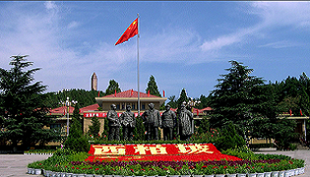
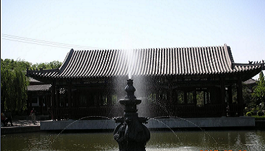
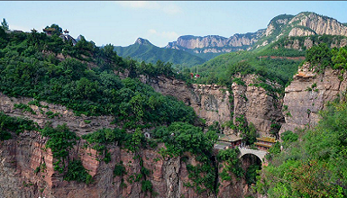

西柏坡
西柏坡位于平山县境内，距石家庄市区80公里，中国著名的爱国主义教育基地，国家AAAAA级重点风景名胜区。1947年以刘少奇、朱德为首的中央工作委员会先期进驻西柏坡召开了中国土地会议，颁布实施《中国土地法大纲》。1948年毛泽东、周恩来、任弼时率领中共中央和解放军总部移驻西柏坡，在此组织指挥了辽沈、淮海、平津三大战役，取得了战略决战的决定性胜利。

隆兴寺
隆兴寺位于石家庄市正定新区（原正定县城区），是国内现存时代较早、规模较大而又保存完整的佛教寺院之一。隆兴寺始建于隋开皇六年（586年），原名“龙藏寺”。

苍岩山
苍岩山位于河北省石家庄市井陉县东南，距石家庄市70公里，海拔1000余米，是中国国家级重点风景名胜区之一。1988年被国务院公布为第二批国家重点风景名胜区之一。《西游记》《卧虎藏龙》《木乃伊3》《鸡毛信》《大国医》《花木兰》许多影视镜头都在这里拍摄。

- 如果顺路的话可以一去。特意去一趟不值得。公园很小，走过一段两旁放着八仙的路就到了赵州桥了，雕花的桥板都拆下来保养了，后面有个博物馆还是研究所什么没开门。
- 赵州桥园区值得一去。古桥博物馆A馆灯光布景太差，拍照很费劲，B馆里面商业气息太浓，温度高，展品破烂，有些文物（也许不是真的吧）随便堆砌。
- 赵州桥 是很有名气的景点，但是景色很一般，关键是来看历史背景的，整个桥也修成了一个景区，再加上 柏林 寺，去玩玩也不错
- 经历了沧桑，见证了历史，闻名中外的赵州桥。